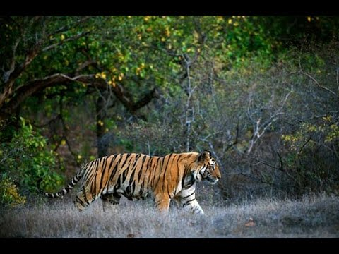
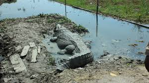
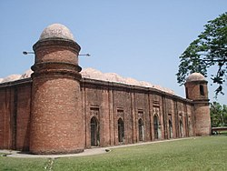
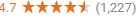
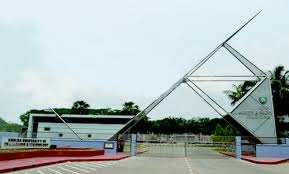
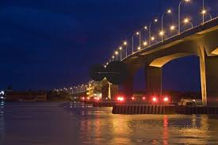
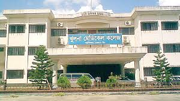
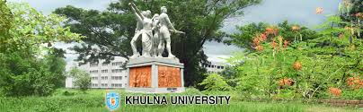
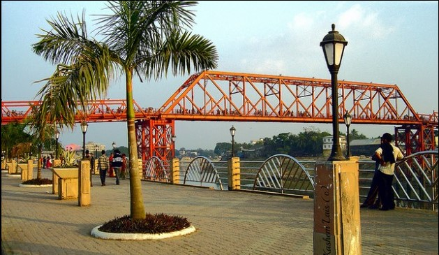

KhulnaCity in Bangladesh SundarbansMangrove Forest |
|||||
|
Khulna is the main city in Khulna Division in Bangladesh. On the bank of Rupsha (and Bhairav) river, it is known as the industrial city and located in southern part of Bangladesh. A large part of the Sundarbans, a UNESCO world heritage is located in Khulna. It has many Jute mills, the only newsprint mill and hardboard mill of Bangladesh, the only state-owned match factory (Dada match, later Dhaka match), Oxygen company (BOL), Ship yard. Khulna is the 3rd largest city in Bangladesh after Dhaka and Chittagong. It is a quiet, calm city inhabited by 1.5 million people. More |

The Sunderbans |

Khan Jahan Ali Mazar |
|||
Top sights |
See all |
||||
|

ষাট গম্বুজ মসজিদShaṭ Gombuj Moshjid; more commonly known as Shait Gambuj Mosque or Saith Gunbad Masjid), More |

KUETKhulna University of Engineering & Technology (KUET) is one of the leading public...... more |

Rupsha BridgeKhan Jahan Ali Bridge is a bridge over Rupsa River in Khulna, Bangladesh. The bridge is also known as Rupsa bridg |

Khulna Medical Collegehulna Medical College was established in 1992 along with other four medical colleges by the then Govt. |

Khulna UniversityKhulna University is a public university in Bangladesh. It is situated at Gollamari, Khulna, Bangladesh, by the river Moyur, |

Mongla PortThe Port of Mongla is the second busiest seaport of Bangladesh. It is located in Bagerhat District in the more |
Copy Right From Shalahuddin Raj 2018 ||Department of Computer Science Engineering |
|||||